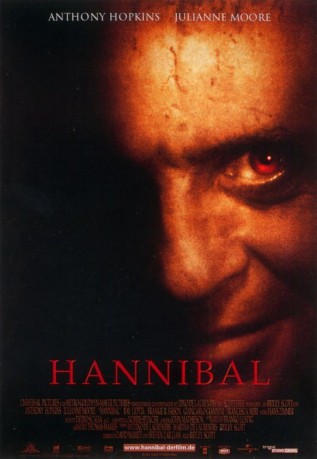

#6724 Hannibal
 
 IMDB-Wertung: 6.8 / 10
IMDB-Wertung: 6.8 / 10  Tomatometer: 39
Tomatometer: 39  Metascore: 0
Metascore: 0 
Zehn Jahre sind vergangen, seitdem die FBI-Agentin Clarice Starling ihre erste nervenaufreibende Begegnung mit dem kannibalistischen Schwerverbrecher und diabolischen Genie Dr. Hannibal Lecter hatte. Nach seiner spektakulären Flucht aus dem Gefängnis bewegt sich Lecter frei in Florenz umher, und die ahnungslose Welt ist ihm schutzlos ausgeliefert. Doch die Zeit heilt keine Wunden – der einst von Lecter verstümmelte Multimillionär Verger entwickelte sich, getrieben von unvorstellbar grausamen Racheplänen, zu dessen ebenbürtigen Rivalen. Als Patient von Lecter musste er sich selbst vor Jahren das Gesicht mit einer Scherbe häuten und sinnt auf bittere Rache für die Qualen und Entstellungen. Um Lecter endlich den Schweinen zum Fraß vorzuwerfen, braucht Verger einen unwiderstehlichen Köder: Clarice Starling.
Jahr: 2001
Dauer: 131 Minuten
FSK: 16
Land: USA Studio: MGMTonspuren:
Untertitel:
Auflösung: 1080p (1920x1040) Größe: 11264 MB
Genre: Thriller, Drama, Krimi
Regisseur:  Ridley Scott
Ridley Scott
Drehbuch: Thomas Harris
Soundtrack:
Darsteller:
 Anthony Hopkins als Hannibal Lecter
Anthony Hopkins als Hannibal Lecter Julianne Moore als Clarice Starling
Julianne Moore als Clarice Starling Gary Oldman als Mason Verger
Gary Oldman als Mason Verger Ray Liotta als Paul Krendler
Ray Liotta als Paul Krendler Frankie Faison als Nurse Barney
Frankie Faison als Nurse Barney Giancarlo Giannini als Insp. Rinaldo Pazzi
Giancarlo Giannini als Insp. Rinaldo Pazzi- Francesca Neri als Allegra Pazzi
 Zeljko Ivanek als Dr. Cordell Doemling
Zeljko Ivanek als Dr. Cordell Doemling- Hazelle Goodman als Evelda Drumgo
 David Andrews als FBI Agent Pearsall
David Andrews als FBI Agent Pearsall Francis Guinan als FBI Asst. Director Noonan
Francis Guinan als FBI Asst. Director Noonan Enrico Lo Verso als Gnocco
Enrico Lo Verso als Gnocco- Fabrizio Gifuni als Matteo
- Alex Corrado als Piero
 Terry Serpico als Officer Bolton
Terry Serpico als Officer Bolton Boyd Kestner als Special Agent Burke
Boyd Kestner als Special Agent Burke- Peter Shaw als Special Agent John Brigham
 Don McManus als Asst. Mayor Benny Holcombe
Don McManus als Asst. Mayor Benny Holcombe- Ted Koch als BATF Agent Bob Sneed
- Aaron Craig als 'Il Mostro' Detective
- Andrea Piedimonte Bodini als Agent Franco Benetti
 Mark Margolis als Perfume Expert
Mark Margolis als Perfume Expert Ajay Naidu als Perfume Expert
Ajay Naidu als Perfume Expert Bruce MacVittie als FBI Tech with Lecter's Letter
Bruce MacVittie als FBI Tech with Lecter's Letter Giannina Facio als Verger's Fingerprint Technician
Giannina Facio als Verger's Fingerprint Technician Judie Aronson als News Reporter
Judie Aronson als News Reporter- Roberta Armani als Theatergoer
 Jamie Harrold als Baltimore State Forensic Hospital Caretaker , uncredited
Jamie Harrold als Baltimore State Forensic Hospital Caretaker , uncredited Chuck Jeffreys als Gang Banger with Machine Gun , uncredited
Chuck Jeffreys als Gang Banger with Machine Gun , uncredited Rick Kain als FBI Agent , uncredited
Rick Kain als FBI Agent , uncredited Derrick Simmons als Evelda Drumgo's Bodyguard , uncredited
Derrick Simmons als Evelda Drumgo's Bodyguard , uncredited Brian Smyj als FBI Agent , uncredited
Brian Smyj als FBI Agent , uncredited- James Opher als DEA Agent John Eldridge
- Ivano Marescotti als Carlo
- Marco Greco als Tommaso
- Robert Rietty als Sogliato
- Kent Linville als Geoffrey, FBI Mail Boy
- Harold Ginn als Larkin Wayne, I.A.B.
- William Powell-Blair als FBI Agent
- Ennio Coltorti als Ricci
- Ian Iwataki als Young Boy in Plane
- Kelly Piper als Perfume Expert
- Andrew C. Boothby als Police Officer
- Kenneth W. Smith als Police Sergeant
- Tom Trigo als News Reporter
- Sam Wells als News Reporter
- Ricardo Miguel Young als News Reporter
- Joseph M. West Jr. als News Reporter
- Johannes Kiebranz als Mr. Konie
- Bruno Lazzaretti als Dante
Datei: X:\5-Pentalogie(A-Z)\Hannibal Lecter\Hannibal (2001, FSK16, 1920x1040).mkv seit 09.08.2017
Festplatte: HD Collection-3(N-Z)-6(A-Z)
 Es gibt insgesamt 8 Filme in der Gruppe '5-Pentalogie(A-Z)\Hannibal Lecter'
Es gibt insgesamt 8 Filme in der Gruppe '5-Pentalogie(A-Z)\Hannibal Lecter'